Renault The Originals Store
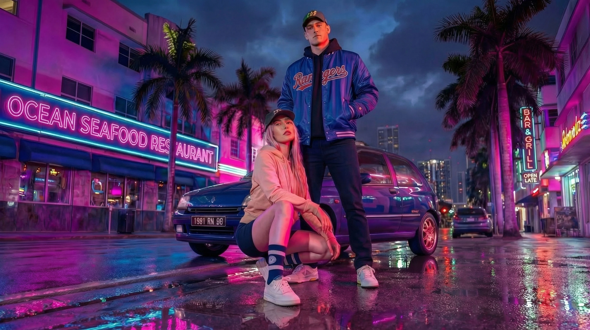
January 2026
The Originals Store is Renault’s official e-commerce platform for branded merchandise, from clothing and accessories to toys and model cars.
I worked with the Paris-based web studio 60 FPS on the design direction for a redesign tender. In collaboration with Creative Director Matthieu Kobler, we worked to modernize the e-commerce experience around three key goals: strengthen the brand’s presence in pop culture, improve conversion throughout the customer journey, and turn inspiration into purchase.
We started by auditing the existing platform and benchmarking other e-commerce experiences to simplify the structure, improve navigation, and establish the foundations of a flexible design system. I then designed the main interfaces, from the homepage to category, listing, and product pages, with a particular focus on filtering, search, reassurance elements, and the purchasing journey.
The project also explored several conversion-focused features, including quick buy, sticky add-to-cart, product recommendations, badges, free-shipping progress indicators, and a simplified checkout. The goal was to create a clearer, smoother, and more engaging shopping experience while staying true to Renault’s brand universe.
-
Creative Director
Matthieu Kobler
-
Agency
60 FPS
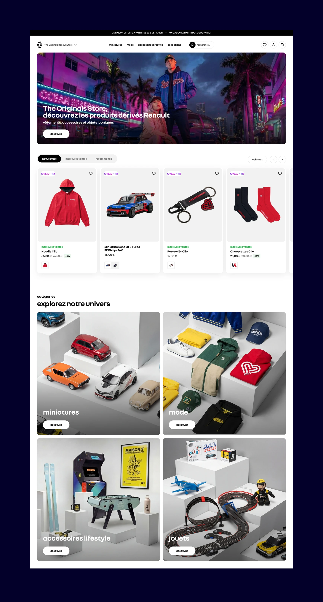
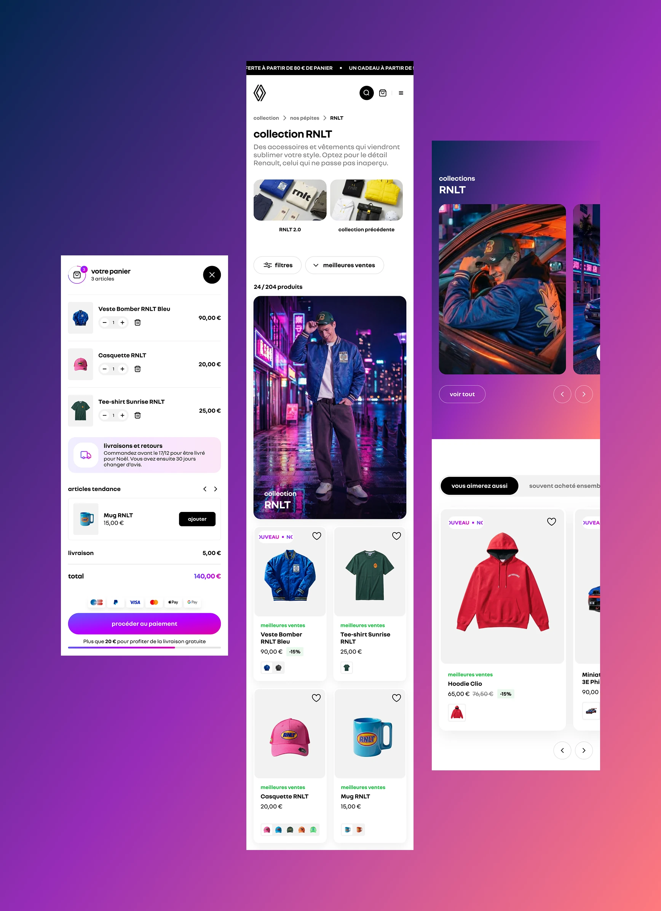
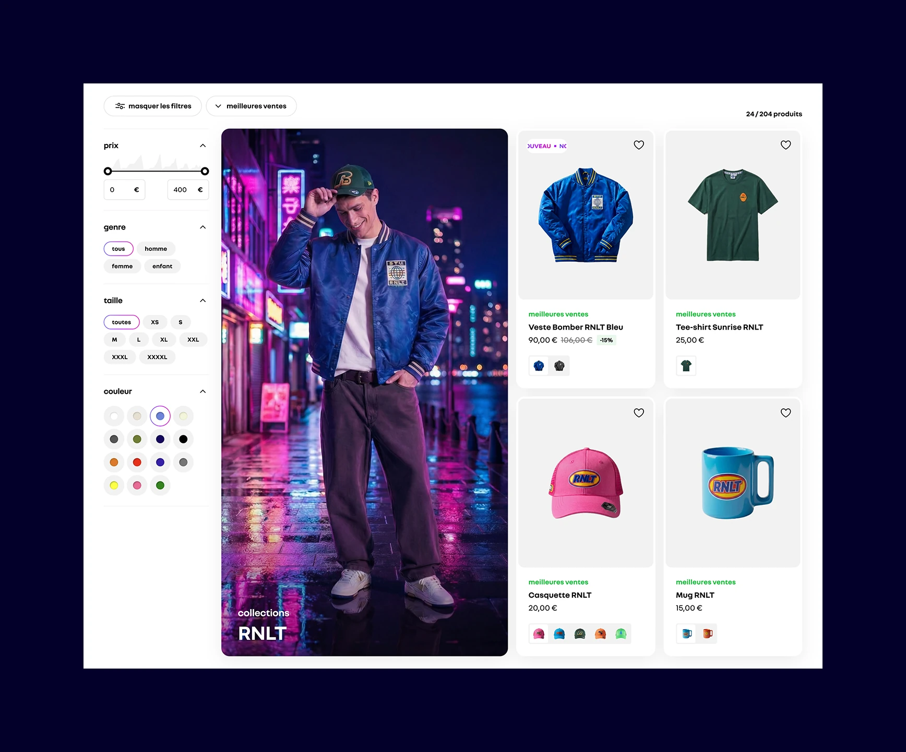
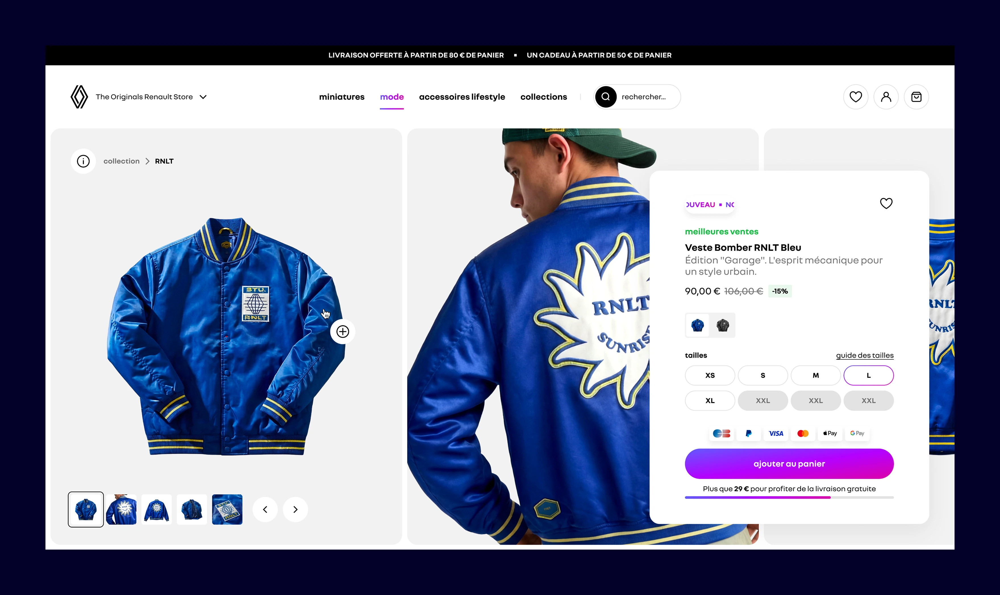
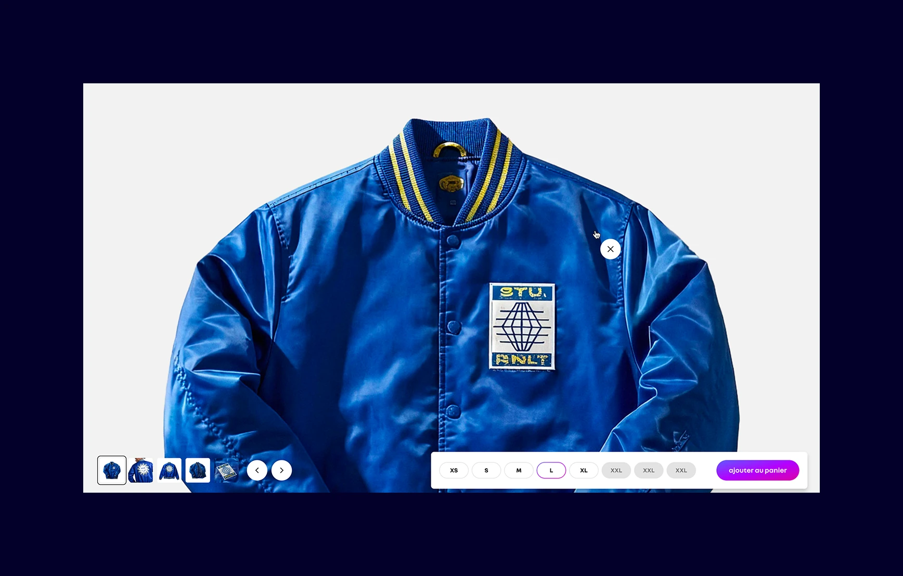
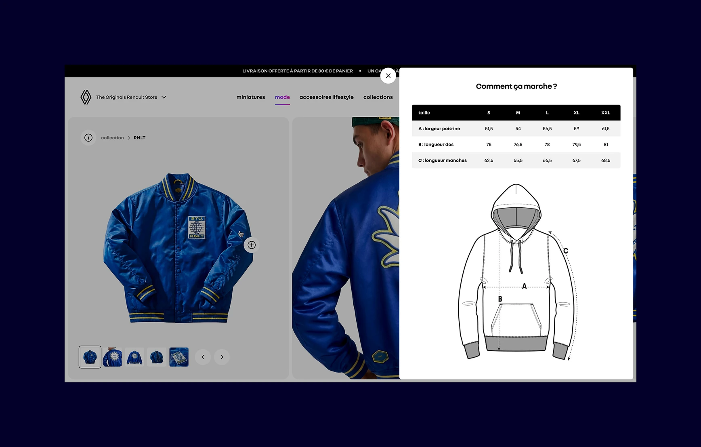
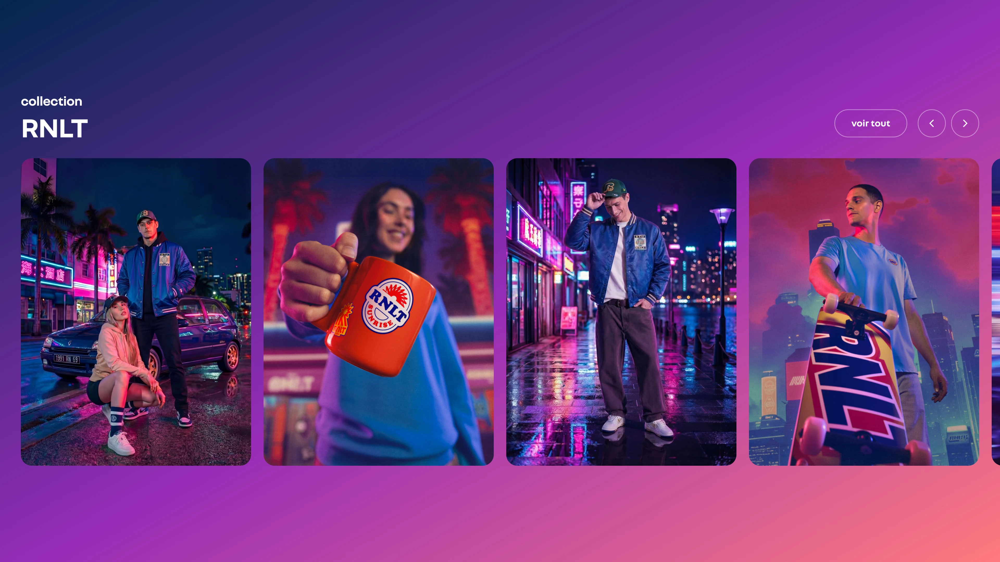
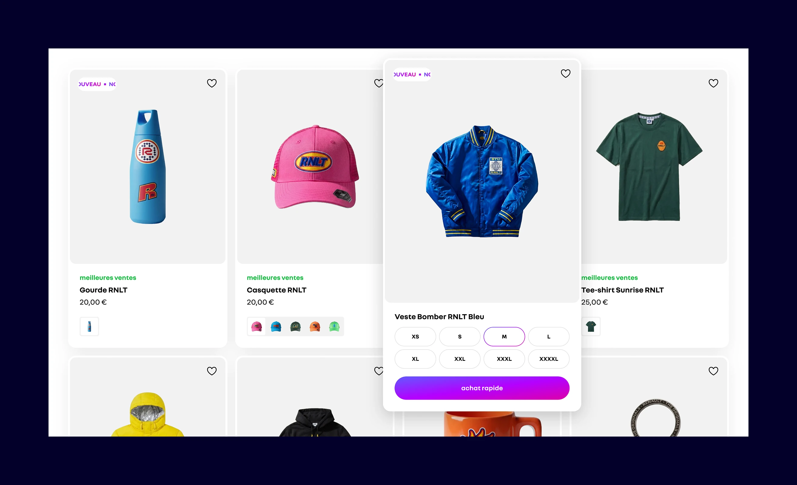
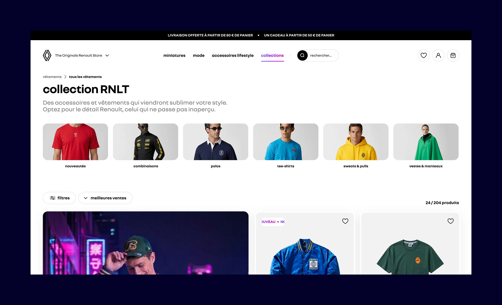
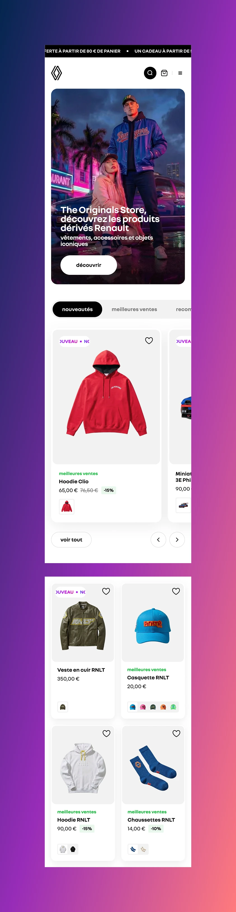
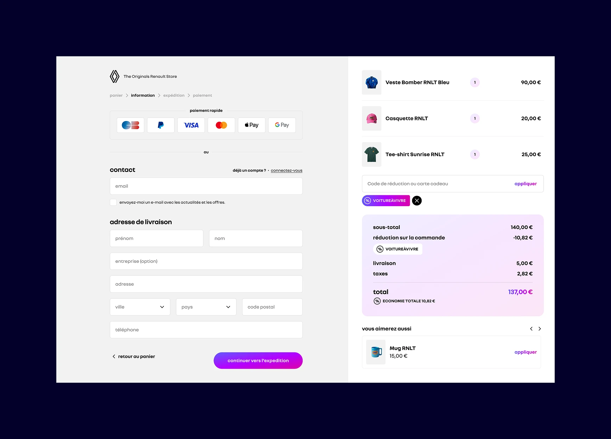
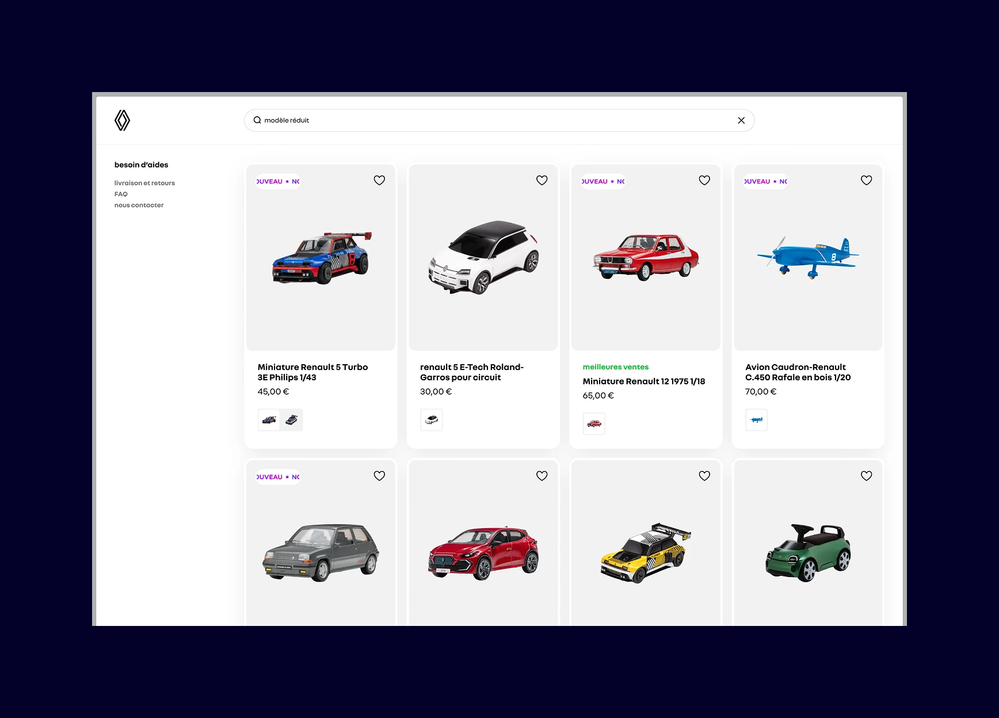
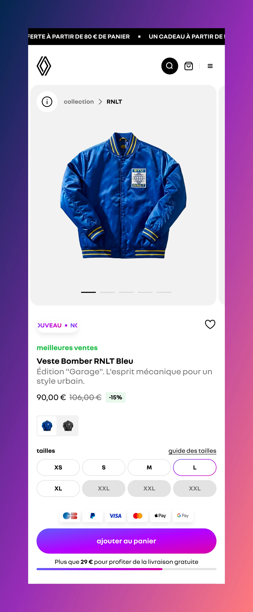
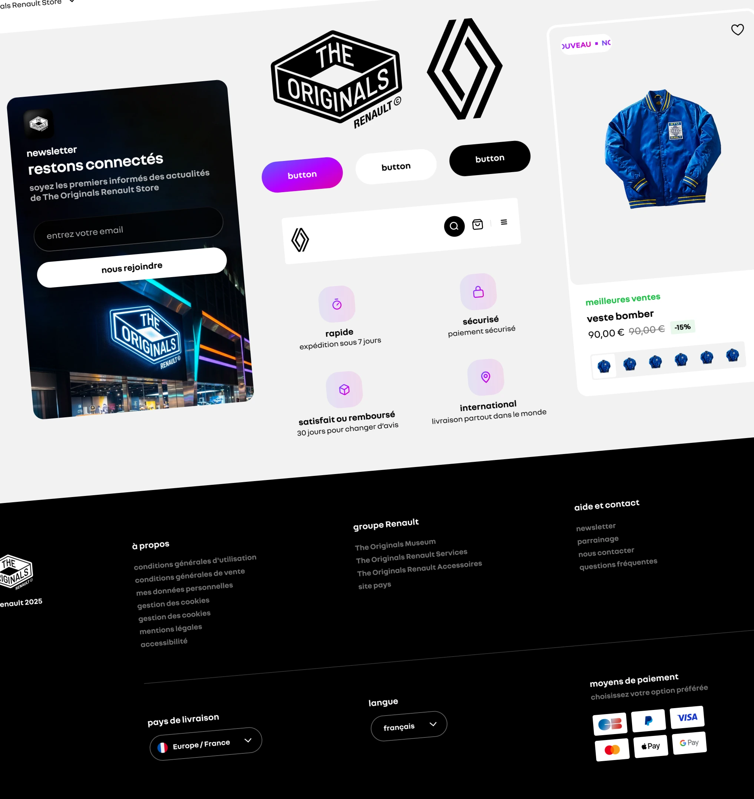
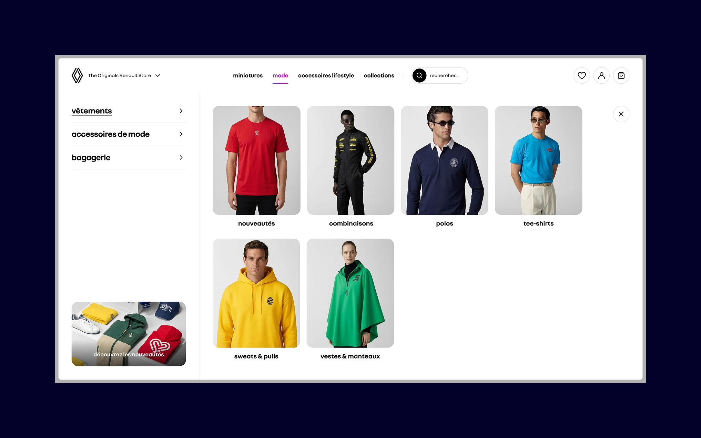